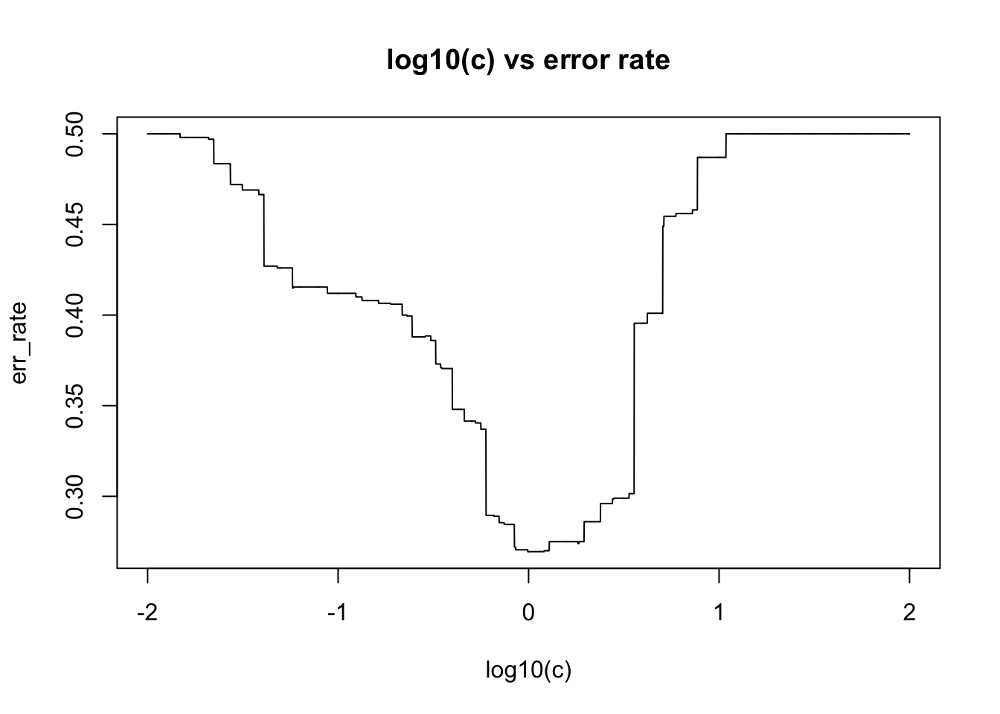
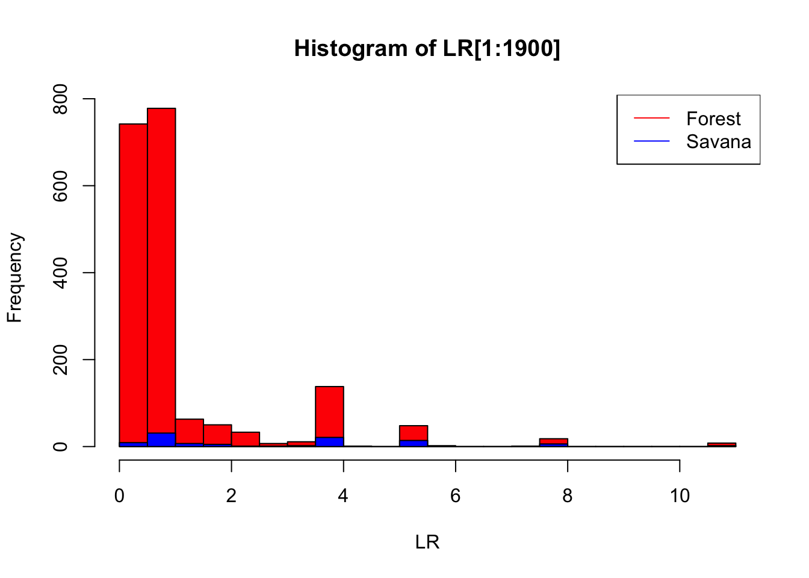

Last updated: 2021-04-06
Checks: 7 0
Knit directory: stat348_hw/
This reproducible R Markdown analysis was created with workflowr (version 1.6.2). The Checks tab describes the reproducibility checks that were applied when the results were created. The Past versions tab lists the development history.
Great! Since the R Markdown file has been committed to the Git repository, you know the exact version of the code that produced these results.
Great job! The global environment was empty. Objects defined in the global environment can affect the analysis in your R Markdown file in unknown ways. For reproduciblity it’s best to always run the code in an empty environment.
The command set.seed(20210404) was run prior to running the code in the R Markdown file. Setting a seed ensures that any results that rely on randomness, e.g. subsampling or permutations, are reproducible.
Great job! Recording the operating system, R version, and package versions is critical for reproducibility.
Nice! There were no cached chunks for this analysis, so you can be confident that you successfully produced the results during this run.
Great job! Using relative paths to the files within your workflowr project makes it easier to run your code on other machines.
Great! You are using Git for version control. Tracking code development and connecting the code version to the results is critical for reproducibility.
The results in this page were generated with repository version bced1c8. See the Past versions tab to see a history of the changes made to the R Markdown and HTML files.
Note that you need to be careful to ensure that all relevant files for the analysis have been committed to Git prior to generating the results (you can use wflow_publish or wflow_git_commit). workflowr only checks the R Markdown file, but you know if there are other scripts or data files that it depends on. Below is the status of the Git repository when the results were generated:
Ignored files:
Ignored: .Rhistory
Ignored: .Rproj.user/
Untracked files:
Untracked: data/four_salmon_pops.csv
Untracked: data/zip.test
Untracked: data/zip.train
Untracked: script/
Note that any generated files, e.g. HTML, png, CSS, etc., are not included in this status report because it is ok for generated content to have uncommitted changes.
These are the previous versions of the repository in which changes were made to the R Markdown (analysis/hw1.Rmd) and HTML (docs/hw1.html) files. If you’ve configured a remote Git repository (see ?wflow_git_remote), click on the hyperlinks in the table below to view the files as they were in that past version.
| File | Version | Author | Date | Message |
|---|---|---|---|---|
| Rmd | bced1c8 | zihao12 | 2021-04-06 | hw1 done and add index |
| html | f0b7944 | zihao12 | 2021-04-06 | Build site. |
| Rmd | 2fa02a9 | zihao12 | 2021-04-06 | hw1 done |
| Rmd | 60b1659 | zihao12 | 2021-04-06 | update hw1 |
| Rmd | 0b71cfd | zihao12 | 2021-04-06 | update hw1 |
| Rmd | 737d6a3 | zihao12 | 2021-04-06 | update hw1 |
| Rmd | 99b058b | zihao12 | 2021-04-04 | hw1 |
rm(list = ls())
set.seed(123)
library(imager)
library(class)simulate_tusk <- function(f, n = 1000){
k = length(f)
return(t(matrix(rbinom(n = n*k, size = 1, prob = f), nrow = k)))
}
simulate_p1 <- function(fS, fF, nF,nS){
forest <- simulate_tusk(f = fF, n = nF)
savan <- simulate_tusk(f = fS,n = nS)
X = rbind(forest, savan)
y = c(replicate(nF, 1), replicate(nS,0)) ## forest is 1, savana is 0
return(list(X = X, y = y))
}
classifier_lr <- function(data, fS, fF){
X = data$X
y = data$y
## compute loglikelihood for each sample, for model S & F respectively
llS <- rowSums(X %*% diag(log(fS)) + (1 - X) %*% diag(log(1-fS)))
llF <- rowSums(X %*% diag(log(fF)) + (1 - X) %*% diag(log(1-fF)))
## compute LR for each sample
LR = exp(llF - llS)
return(LR)
}
experiment_p1 <- function(fS, fF, nF,nS, cs, seed = 123){
set.seed(seed)
data <- simulate_p1(fS, fF, nF,nS)
LR <- classifier_lr(data, fS, fF)
err_rates <- c()
for(c in cs){
yhat <- (LR > c)
err_rate <- mean(yhat != data$y)
err_rates <- c(err_rates, err_rate)
}
return(err_rates)
}fS = c(0.40, 0.12,0.21,0.12,0.02,0.32)
fF = c(0.8,0.2,0.11,0.17,0.23,0.25)
log10_cs = seq(-2, 2, by = 0.001)
err_rate = experiment_p1(fS = fS, fF = fF, nF = 1000, nS = 1000,
cs = 10^log10_cs)
plot(log10_cs, err_rate, type = "l",
xlab = "log10(c)",ylab = "err_rate", main = "log10(c) vs error rate")
| Version | Author | Date |
|---|---|---|
| f0b7944 | zihao12 | 2021-04-06 |
c_min = 10^(log10_cs[which.min(err_rate)])
print(sprintf("minimizer of error rate is c = %f, with error rate = %f", c_min, min(err_rate)))[1] "minimizer of error rate is c = 0.829851, with error rate = 0.269500"log10_cs = seq(-6, 0, by = 0.001)
err_rate = experiment_p1(fS = fS, fF = fF, nF = 1900, nS = 100,
cs = 10^log10_cs)
plot(log10_cs, err_rate, type = "l",
xlab = "log10(c)",ylab = "err_rate", main = "log10(c) vs error rate")
| Version | Author | Date |
|---|---|---|
| f0b7944 | zihao12 | 2021-04-06 |
c_min = 10^(log10_cs[which.min(err_rate)])
print(sprintf("minimizer of error rate is c = %f, with error rate = %f", c_min, min(err_rate)))[1] "minimizer of error rate is c = 0.000001, with error rate = 0.050000"The minimizer is \(c = 0\) (i.e. classifiying every sample as Forest). Why? Because the Forest has way more samples, and that the LRs for Savana’s LRs are not separable from that of Forest.
Specifically, if we want to correctly classify any Savana sample (i.e. set a larger \(c\)), we would sacrifice more mistakes among Forest samples, as can be seen clearly from the histogram below.
Therefore to make the least mistakes, the best decision rule is to classify everything as Forest.
data <- simulate_p1(fS, fF, nF = 1900, nS = 100)
LR = classifier_lr(data, fS, fF)
hF <- hist(LR[1:1900],plot = FALSE,breaks = 30)
hS <- hist(LR[1901:2000],plot = FALSE, breaks = 30)
plot(hF, col = "red",xlab = "LR")
plot(hS, col = "blue",add = TRUE)
legend("topright",legend = c("Forest", "Savana"),
col = c("red", "blue"), lty=1:1)
| Version | Author | Date |
|---|---|---|
| f0b7944 | zihao12 | 2021-04-06 |
load_data <- function(filename){
data = read.table(filename, header = FALSE)
data <- data.frame(data)
colnames(data) <- c("y", 1:256)
return(data)
}
subset_23 <- function(data){
idx <- which(data$y %in% c(2,3))
data <- data[idx, ]
data$y <- (data$y == 2)
return(data)
}
plot_digit <- function(data, idx){
im <- matrix(as.numeric(data[idx,2:257]), nrow = 16, ncol = 16)
image(t(apply(-im,1,rev)),col=gray((0:32)/32), main = data$y[idx])
}data_test = load_data("data/zip.test")
data_train = load_data("data/zip.train")
par(mfrow = c(2,2))
ids <- c(1,12,34,77)
for(i in ids){
plot_digit(data_train, i)
}
| Version | Author | Date |
|---|---|---|
| f0b7944 | zihao12 | 2021-04-06 |
get the subset of data with labels 2 or 3
data_train23 = subset_23(data_train)
data_test23 = subset_23(data_test)compute_loss <- function(y,yhat, cost){
diff <- y - yhat
loss = cost[1] * sum(diff == 1) + cost[2] * sum(diff == -1)
return(loss/length(y))
}
## use fitted glm model and cost to predict yhat, and compute loss
pred_logistic <- function(fit, cost, new_data, y){
p0 = cost[2]/sum(cost)
phat <- predict.glm(fit, newdata = new_data, type = "response")
yhat <- (phat > p0)
loss <- compute_loss(y, yhat, cost)
return(list(yhat = yhat, loss = loss))
}
## cost[1] is for (y, yhat) = (1, 0)
## cost[2] is for (y, yhat) = (0, 1)
classifier_logistic <- function(data_train, data_test, cost = c(1,1)){
fit <- glm(y ~ ., family=binomial(link='logit'), data = data_train)
pred_train <- pred_logistic(fit = fit, cost = cost,
new_data = data_train[,2:257], y = data_train$y)
pred_test <- pred_logistic(fit = fit, cost = cost,
new_data = data_test[,2:257], y = data_test$y)
return(list(loss_test = pred_test$loss, loss_train = pred_train$loss,
yhat_test = pred_test$yhat, yhat_train = pred_train$yhat, fit = fit))
}
outcome_logistic = classifier_logistic(data_train23, data_test23)Warning: glm.fit: algorithm did not convergeWarning: glm.fit: fitted probabilities numerically 0 or 1 occurred## given knn output (with prob = T), make prediction based on cutoff probability
pred_knn <- function(fit, y, cost){
p0 = cost[2]/sum(cost)
winning = as.numeric(fit) - 1 ## the prediction is 1 & 2,which should be 0 & 1
phat = attr(fit,"prob") ## its prob for the winning class
phat = winning * phat + (1-winning) * (1 - phat)
yhat <- (phat > p0)
loss <- compute_loss(y, yhat, cost)
return(list(loss =loss, yhat = yhat))
}
classifier_knn <- function(data_train, data_test, k, cost = c(1,1)){
p0 = cost[2]/sum(cost)
## fit and predict on test data
fit_test <- class::knn(data_train[, 2:257], data_test[,2:257], data_train[,1], k = k, prob = TRUE)
pred_test <- pred_knn(fit = fit_test, y = data_test$y, cost= cost)
## do the same for training data
fit_train <- class::knn(data_train[, 2:257], data_train[, 2:257], data_train[,1], k = k, prob = TRUE)
pred_train <- pred_knn(fit = fit_train, y = data_train$y, cost= cost)
return(list(loss_test = pred_test$loss, loss_train = pred_train$loss,
yhat_test = pred_test$yhat, yhat_train = pred_train$yhat,
fit_test = fit_test, fit_train = fit_train))
}
ks <- c(NA, 1,3,5,7,15)
models <- c("logistic", replicate(5, "KNN"))
err_train <- c(outcome_logistic$loss_train)
err_test <- c(outcome_logistic$loss_test)
for(i in 2:length(ks)){
out <- classifier_knn(data_train23, data_test23, ks[i])
err_train <- c(err_train, out$loss_train)
err_test <- c(err_test, out$loss_test)
}In the plot below red and blue dots are KNN test err and training err; the upper line is test error for glm and the bottom line (which is \(0\)) is training error for glm.
data.frame(model = models, k = ks, err_train = err_train, err_test = err_test) model k err_train err_test
1 logistic NA 0.000000000 0.05494505
2 KNN 1 0.000000000 0.02472527
3 KNN 3 0.005039597 0.03021978
4 KNN 5 0.005759539 0.03021978
5 KNN 7 0.006479482 0.03296703
6 KNN 15 0.009359251 0.03846154plot(ks[2:length(ks)], err_test[2:length(ks)], col = "red", xlab = "k", ylab = "err rate", ylim = c(0, 0.06))
points(ks[2:length(ks)], err_train[2:length(ks)], col = "blue")
abline(h = err_train[1], lty = 3, col = "red")
abline(h = err_test[1], lty = 3, col = "red")
| Version | Author | Date |
|---|---|---|
| f0b7944 | zihao12 | 2021-04-06 |
I will use 10-fold cross-validation
knn_cv <- function(data_train, k, d = 10, cost = c(1,1)){
N = nrow(data_train)
grp_size = floor(N/d)
loss <- 0
for(i in 1:d){
start = grp_size*(i-1)
end = ifelse(i < d, grp_size*i, d)
idx = start:end
fit <- class::knn(data_train[-idx, 2:257], data_train[idx, 2:257], data_train[-idx,1], k = k, prob = TRUE)
loss = loss +
length(data_train$y[idx]) * pred_knn(fit = fit, y = data_train$y[idx], cost = cost)$loss
}
return(loss/N)
}
err_cv <- c()
ks <- c(1,3,5,7,15)
for(k in ks){
err_cv <- c(err_cv, knn_cv(data_train23, k))
}
err_cv[1] 0.03671706 0.03455724 0.03239741 0.04319654 0.04895608From the CV result above, \(k = 3\) is the best choice (tried 10-fold CV and also have \(K = 3\) is the best).
It’s not in agreement with the test data, but not off by much.
Therefore we predict \(\hat{y} = 2\) when \(\hat{p} \geq \frac{1}{6}\).
For both logistic regression and KNN I already incorporated cost in the functions above.
loss_new = outcome_logistic_cost = classifier_logistic(data_train23, data_test23, cost = c(1, 5))$loss_testWarning: glm.fit: algorithm did not convergeWarning: glm.fit: fitted probabilities numerically 0 or 1 occurredloss_old = compute_loss(y = data_test23[,1], yhat = outcome_logistic$yhat_test, cost = c(1,5))
print(sprintf("average test err old vs new: %f vs %f", loss_new, loss_old))[1] "average test err old vs new: 0.153846 vs 0.175824"I compared a couple of KNN’s below
compare_knn_new_old <- function(k){
print(sprintf("%d-KNN:", k))
fit <- class::knn(data_train23[, 2:257], data_test23[,2:257], data_train23[,1], k = k, prob = TRUE)
pred_old <- pred_knn(fit = fit, y = data_test23[,1], cost = c(1,1))
pred_new <- pred_knn(fit = fit, y = data_test23[,1], cost = c(5,1))
loss_old = compute_loss(y = data_test23[,1], yhat = pred_old$yhat, cost = c(5,1))
loss_new = pred_new$loss
print(sprintf("average test err old vs new: %f vs %f", loss_new, loss_old))
}
for(k in ks){
compare_knn_new_old(k)
}[1] "1-KNN:"
[1] "average test err old vs new: 0.090659 vs 0.090659"
[1] "3-KNN:"
[1] "average test err old vs new: 0.071429 vs 0.107143"
[1] "5-KNN:"
[1] "average test err old vs new: 0.060440 vs 0.107143"
[1] "7-KNN:"
[1] "average test err old vs new: 0.082418 vs 0.131868"
[1] "15-KNN:"
[1] "average test err old vs new: 0.071429 vs 0.159341"Interesting that 1-KNN the cost does not matter: it turns out that the predicted \(\hat{y}\) are the same for the two models. The test data is too easily separable (the fitted probability is very confident) for 1-KNN that even such an asymmetric cost does not matter much.
data_preprocess <- function(){
orig_data = read.table("data/four_salmon_pops.csv",header=TRUE,colClasses="character",sep=",")
set.seed(100) #to ensure reproducibility
#Convert the data at each locus to a factor
#Note that we have to be careful to include all the levels from *both* columns
#for each locus
mylevels= function(locus){levels(factor(c(orig_data[,(1+2*locus)],
orig_data[,(2+2*locus)])))}
#now set up four_salmon_pops
four_salmon_pops = orig_data
for(locus in 1:12){
four_salmon_pops[,1+2*locus]= factor(four_salmon_pops[,1+2*locus],levels = mylevels(locus))
four_salmon_pops[,2+2*locus]= factor(four_salmon_pops[,2+2*locus],levels = mylevels(locus))
}
#Randomly divide the data into a training set and a test set
nsamp = nrow(four_salmon_pops)
subset = (rbinom(nsamp,1,0.5)==1) #include each fish in subset with probability 0.5
train = four_salmon_pops[subset,]
test = four_salmon_pops[!subset,]
return(list(train = train, test = test, whole = four_salmon_pops))
}
data = data_preprocess()
train = data$train
test = data$test
whole = data$wholeData representation: for each sample,let’s convert the data into count table. Say a sample \(i\) and locus \(l\) is a vector \(x_{il}\) of length \(d_l\) (number of possible alleles at locus \(l\)). For example, if it has alleles \(a_1\), \(a_2\), \(x_{ilj} = 1\) when \(j = a_1, a_2\) and \(x_{ilj} = 1\) otherwise.
Hidden variable: introduce \(z_{i}\) to denote where population sample \(i\) belongs.
Likelihood: Then we can model \(x_{il}\) with a multinomial distribution: \(x_{il} | z_{i} = p \sim MN(2, \pi_{pl})\) where \(\pi_{pl}\) is the proportion of alleles in locus \(l\) and population \(p\). Then we can write the likelihood as follows
Prior: since all four populations are equaly likeliy, then \(p(z_i = p) = 1/4\).
Posterior:
Then since \(\sum_{p = 1}^4 p(z_i = p | x_i) = 1\), we have \[ p(z_i = p | x_i) = \frac{p(x_i | z_i = p)}{\sum_{p^{'}} p(x_i | z_i = p^{'})} \]
#this function computes a table of the alleles and their counts at a given locus (locus= 1...12)
#in a given data frame (data)
compute_counts = function(data,locus){
return(table(data[,1+2*locus]) + table(data[,2+2*locus]))
}
## this function converts counts to frequency (proportions)
normalize= function(x){x/sum(x)}pop = unique(train$Population)
nloc = 12
freqs <- list()
for(i in 1:length(pop)){
data_sub = train[train$Population == pop[i], ]
f <- list()
for(l in 1:nloc){
f_ = normalize(compute_counts(data_sub, l))
f_[f_ == 0] = 1e-8
f[[l]] = normalize(f_)
}
freqs[[i]] = f
}prob_pos <- matrix(NA, nrow = nrow(test), ncol = length(pop))
for(i in 1:nrow(test)){
lls <- replicate(length(pop), NA) ## store p(x_i | z_i = p) for each p
for(p in 1:length(pop)){
ll = 0
for(l in 1:nloc){
counts = compute_counts(test[i,], l)
if(sum(counts) == 2){ ## no missing
ll = ll + dmultinom(x = counts, size = 2, prob = freqs[[p]][[l]], log = TRUE)
if(is.nan(ll)){browser()}
}
}
lls[p] = ll
}
prob = exp(lls)/sum(exp(lls))
prob_pos[i,] <- prob
}The error rate is reported below
z_pred <- apply(prob_pos, 1, which.max)
err_rate = sum(pop[z_pred] != test$Population)/nrow(test)
err_rate[1] 0.2649254There are two challenges: NA in the data and problems caused by exact \(0\) in allele frequency
Problems from NA
NA’s in data, which can affect both estimated allele frequency from training data, and the likelihood for test data.NA’s, except that checking if each \(x_{il}\) sums to exactly 2 (otherwise it cannot be fitted by my model).Problem from allele frequency being exact 0’s:
sessionInfo()R version 3.5.1 (2018-07-02)
Platform: x86_64-apple-darwin15.6.0 (64-bit)
Running under: macOS 10.15.7
Matrix products: default
BLAS: /Library/Frameworks/R.framework/Versions/3.5/Resources/lib/libRblas.0.dylib
LAPACK: /Library/Frameworks/R.framework/Versions/3.5/Resources/lib/libRlapack.dylib
locale:
[1] en_US.UTF-8/en_US.UTF-8/en_US.UTF-8/C/en_US.UTF-8/en_US.UTF-8
attached base packages:
[1] stats graphics grDevices utils datasets methods base
other attached packages:
[1] class_7.3-15 imager_0.42.8 magrittr_1.5 workflowr_1.6.2
loaded via a namespace (and not attached):
[1] igraph_1.2.4.1 Rcpp_1.0.5 knitr_1.28 whisker_0.3-2
[5] R6_2.4.1 jpeg_0.1-8.1 rlang_0.4.5 stringr_1.4.0
[9] tools_3.5.1 xfun_0.8 png_0.1-7 git2r_0.26.1
[13] htmltools_0.5.0 yaml_2.2.0 digest_0.6.25 rprojroot_1.3-2
[17] bmp_0.3 purrr_0.3.4 later_1.1.0.1 promises_1.1.1
[21] fs_1.3.1 glue_1.4.1 evaluate_0.14 tiff_0.1-8
[25] rmarkdown_2.1 readbitmap_0.1.5 stringi_1.4.3 compiler_3.5.1
[29] backports_1.1.7 httpuv_1.5.4 pkgconfig_2.0.3